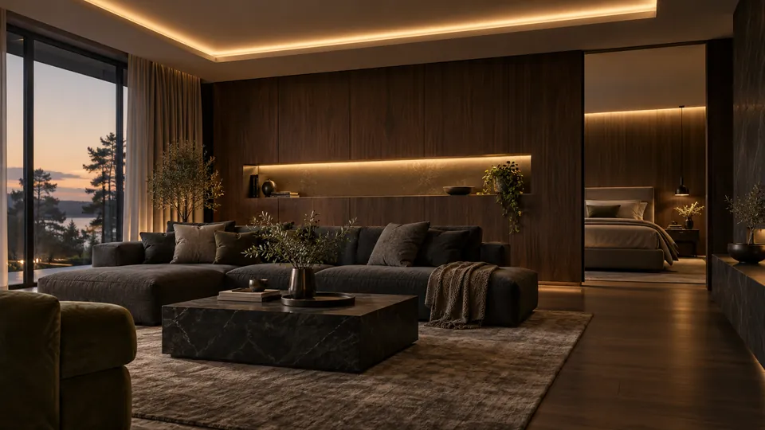
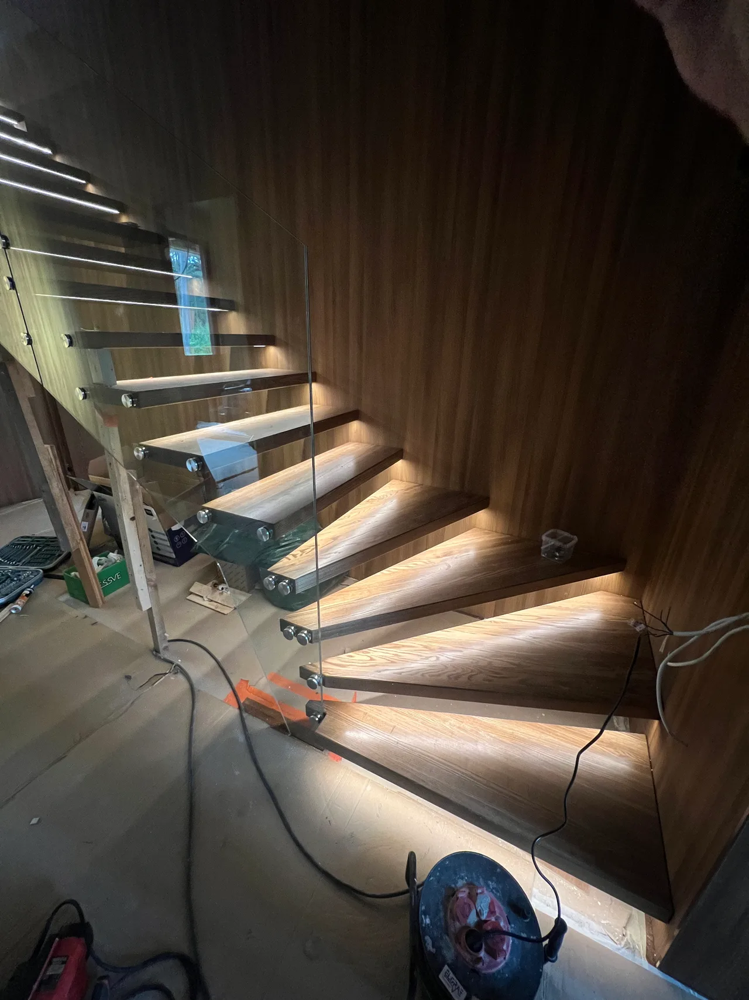
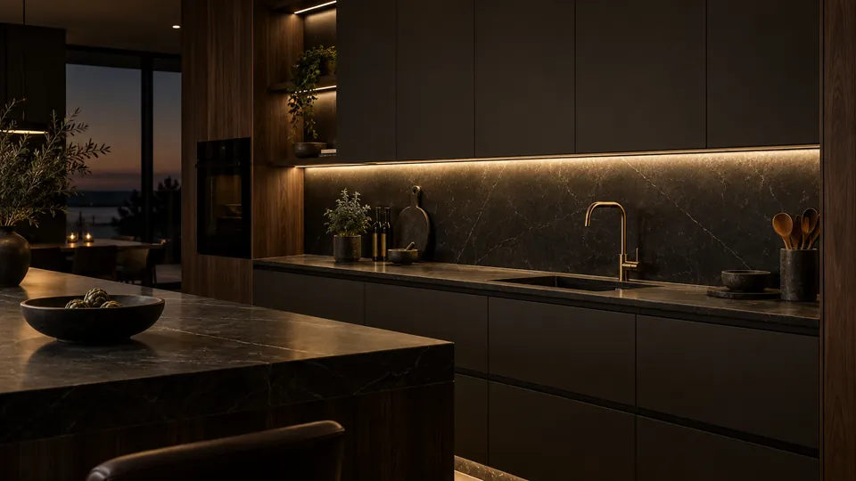
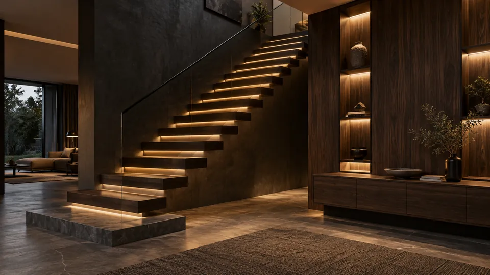
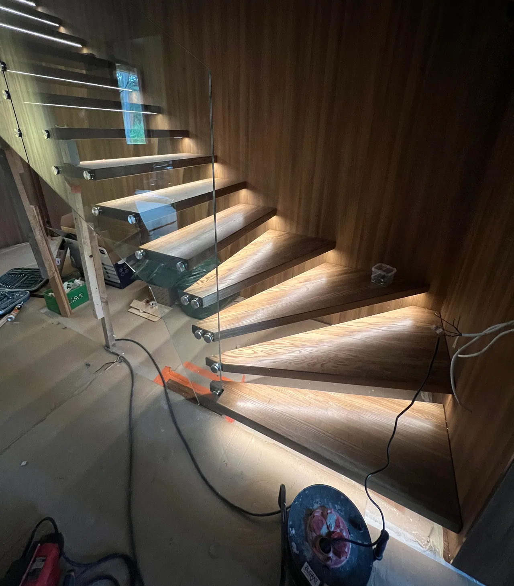

ELUTUBA & MAGAMISTUBA
Pehme valgus.
Rahulik ruum.
Lagede, karniiside ja seinaniššide kaudvalgus loob hubase tausta, jättes valgusallika elegantselt peitu.
Planeerime kaudvalguseLED LAHENDUSED · TALLINN & HARJUMAA
Peidetud valgusjooned. Läbimõeldud detailid.
Sinu kodu, täiesti uues valguses.
Ideest viimistletud valguslahenduseni.
Planeerimine · paigaldus · seadistamine

01 — VÕIMALUSED
Hea valgustus teeb rohkem kui lihtsalt valgustab. See toob esile materjalid, loob meeleolu ja muudab igapäevased tegevused mugavamaks.

ELUTUBA & MAGAMISTUBA
Lagede, karniiside ja seinaniššide kaudvalgus loob hubase tausta, jättes valgusallika elegantselt peitu.
Planeerime kaudvalguse
KÖÖK & TÖÖPINNAD
Köögimööbli alla paigaldatud ühtlane valgus aitab mugavalt toimetada. Profiil ja hajuti annavad puhta viimistluse.
Leiame sobiva töövalguse
TREPID, NIŠID & MÖÖBEL
Astmete, riiulite ja seinapaneelide valgusjooned toovad esile arhitektuuri ning aitavad ruumis orienteeruda.
Toome detailid esile02 — VALGUSE ISELOOM
Valguse toon muudab ruumi tajumist. Proovi erinevaid värvustemperatuure ja leia oma ideele sobiv lähtekoht.
3000 K — soe ja tasakaalukas valgus elutuppa, magamistuppa või trepile.
Illustratiivne tooninäide. Tegelik tulemus sõltub valgustist, materjalidest ja ruumist.
03 — MEIE TÖÖVIIS
Paigaldame LED-ribad, profiilid, toiteplokid ja juhtimislahendused ühe läbimõeldud tervikuna. Nähtavale jääb valgus, mitte tehnika.
Täpsustame ruumi, soovitud meeleolu ja valguse otstarbe. Vaatame üle paigalduskohad, elektriühendused ning kaablite peitmise võimalused.
Sobitame LED-riba, profiili, hajuti ja toiteploki. Toiteplokid jäävad hoolduseks ligipääsetavaks; niisketes ruumides arvestame sobiva kaitseklassiga.
Kontrollime valguse ühtlust, dimmerdamist ja ühenduste töökindlust. Nii saad lahenduse, mida on mugav kasutada ja hiljem hooldada.

MEIE TÖÖ · PAIGALDUSETAPP04 — PÄRIS DETAIL
Puit, klaas ja astme alla peidetud valgus. LED-riba rõhutab trepi rütmi ning annab igale astmele oma valgusjoone.
Sellise tulemuse juures loevad profiili asukoht, kaabelduse planeerimine ja valguse ühtlus. Kõige sujuvamalt sünnib lahendus koos trepi või siseviimistluse kavandamisega.
Vaata töö kirjeldust05 — SINU PROJEKT
Maksumus sõltub valgusjoone pikkusest, profiilidest, juhtimisest ja kaablite ligipääsust. Esmase hinnangu jaoks saada fotod, ligikaudsed mõõdud ja oma idee.
Tutvu hinnakirjagaKaabeldust on lihtsam peita enne kipsi-, paneeli- ja maalritööde lõppu. Juba valmis ruumi puhul vaatame koos üle sobivad võimalused.
Soe valgus sobib sageli puhkealasse, neutraalsem valgus tööpinnale. Valik tehakse koos ruumi muu valgusega, et toonid ei läheks vastuollu. Hea värviedastusega, näiteks CRI 90 või kõrgem LED aitab materjalide toone loomulikumalt näidata; proovime lahendust enne lõplikku paigaldust.
Alumiiniumprofiil aitab soojust ära juhtida ja hajuti valguspunkte pehmendada. Punktivaba joon sõltub LED-ide tihedusest, profiili sügavusest ning hajutist. Toiteplokk dimensioneeritakse riba koguvõimsuse ja tootja varu järgi; pikad lõigud võivad vajada mitmest kohast toidet.
IP-klass valitakse asukoha ja niiskuskoormuse järgi. Vannitoa elektripaigaldise tsoonid ning ühendused vajavad elektriku hinnangut; veekindlam riba ei muuda suvalist toiteploki asukohta sobivaks. Toiteplokk, juhtseade ja ühendused peavad jääma hooldatavaks ning hämardi olema süsteemiga ühilduv.
Planeerimiseks: Saada valgustatava lõigu pikkus, ruumi fotod ning soovitud juhtimisviis. Täpsusta, kas vaja on töövalgust, kaudvalgust või dekoratiivset joont ja kas olemasolev elektritoide sobib.
06 — HEA TEADA
Vastused küsimustele, mis aitavad sul oma valguslahendust planeerida.
Jah, kui kasutada sobiva niiskuskindlusega komponente ja paigaldada ühendused ohutult.
Jah, hoolduse ja võimaliku vahetuse jaoks peab toiteplokile hiljem ligi pääsema.
Võimalusel jah. Parim tulemus tuleb siis, kui kaabeldus planeeritakse enne viimistlustöid.
Kodu üldvalguseks sobib sageli soe või neutraalne toon. Tööpindadel võib sobida neutraalsem valgus, mis ei moonuta värve.
Saab, kuid lahendus sõltub kaablite ligipääsust ja sellest, kuhu saab peita toiteploki. Kõige puhtam tulemus sünnib siis, kui valgustus on planeeritud enne kipsi- ja maalritööde lõppu.
Mõnikord sobib, kuid sageli toimib LED-riba paremini meeleolu- või kaudvalgusena. Põhivalgustuse jaoks tuleb arvestada ruumi suurust, valgusvoogu ja hajuti kvaliteeti.
Toiteplokk peab jääma ligipääsetavasse ja õhutatavasse kohta. Seda ei tohiks täielikult kinni ehitada nii, et hooldus või vahetus muutub hiljem võimatuks.
Jah, kui LED-riba, toiteplokk ja juhtimine on omavahel sobivad. Dimmer tuleb valida süsteemi järgi, mitte ainult lüliti välimuse järgi.
Jah. RK Meistrid OÜ tehtud ehitus- ja viimistlustöödele kehtib 3-aastane garantii. Konkreetse töö sisu ja kokkulepitud tingimused fikseeritakse hinnapakkumises.
SINU IDEE. MEIE TEOSTUS.
Kirjelda oma mõtet. Leiame koos sobiva lahenduse.
Küsi personaalset pakkumistRK Meistrid OÜ · Tallinn ja Harjumaa